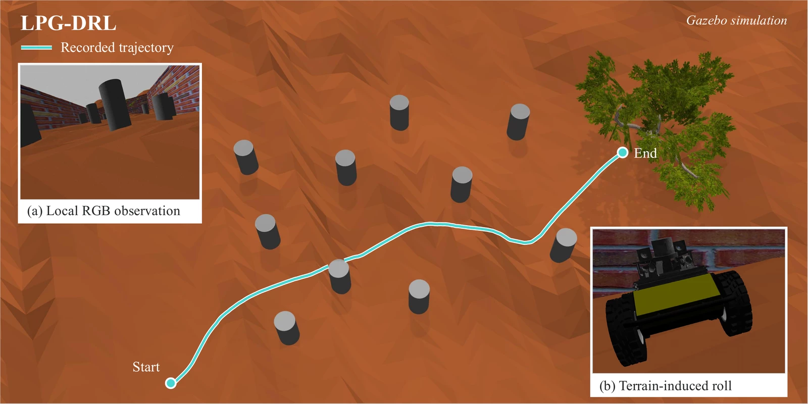
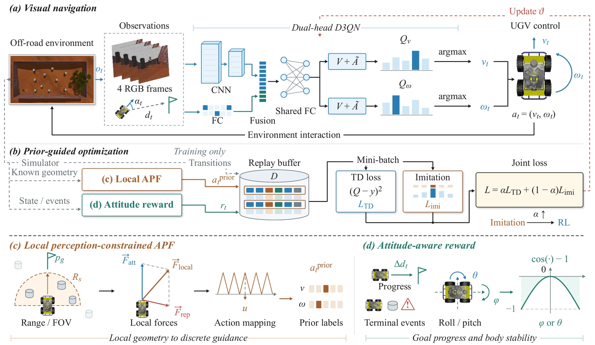
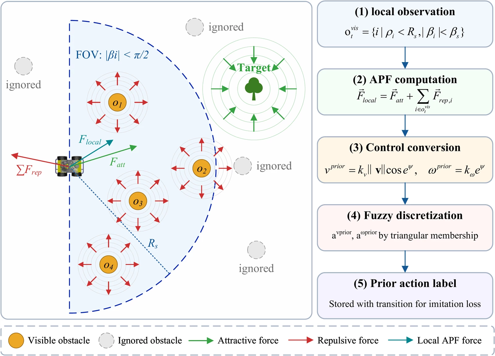
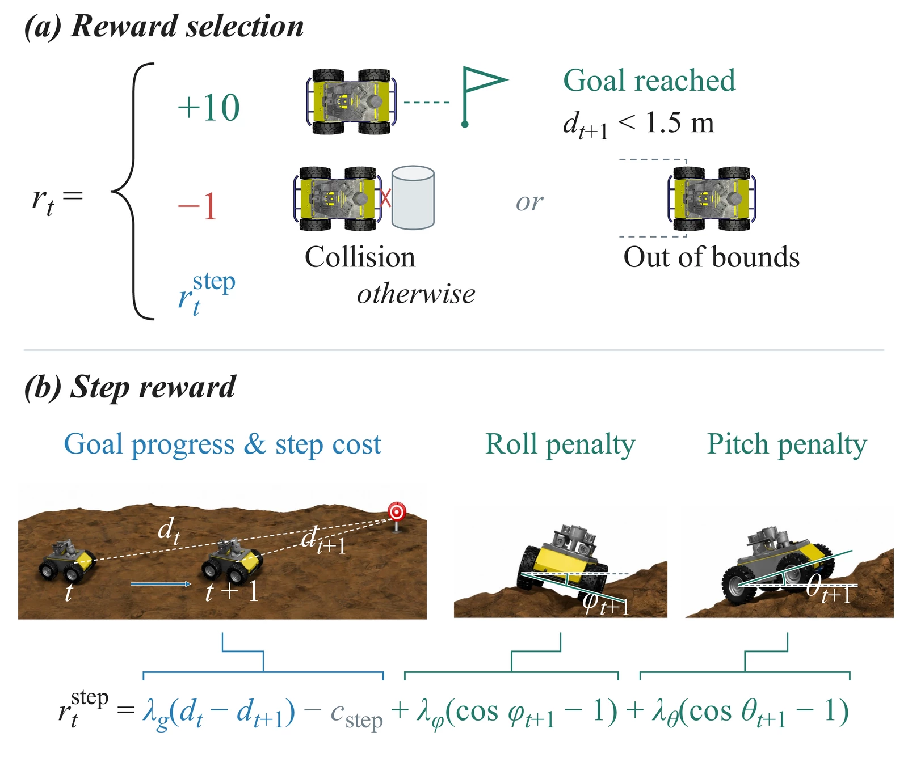
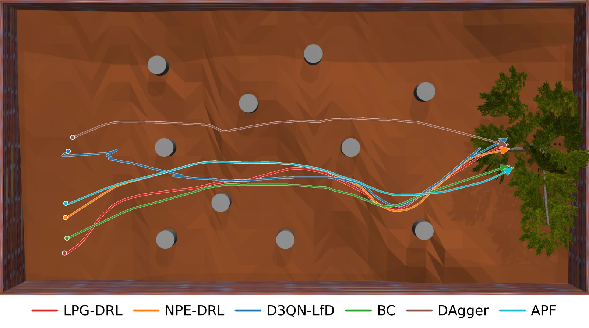
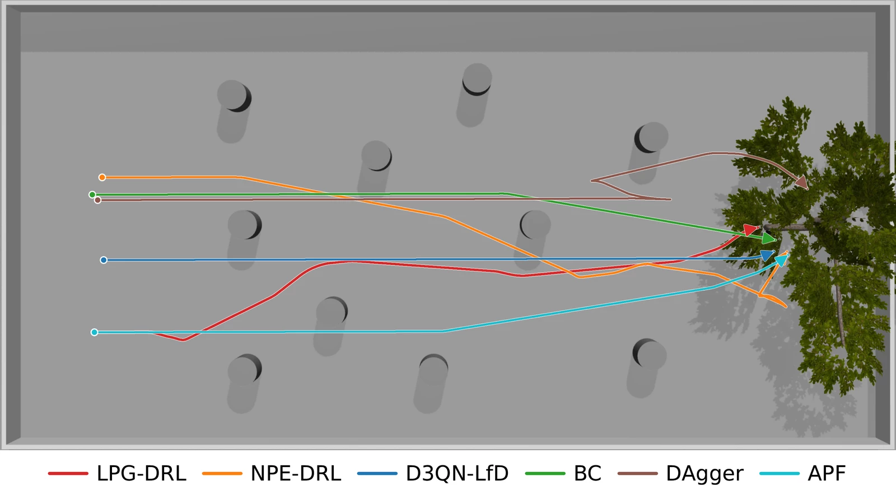
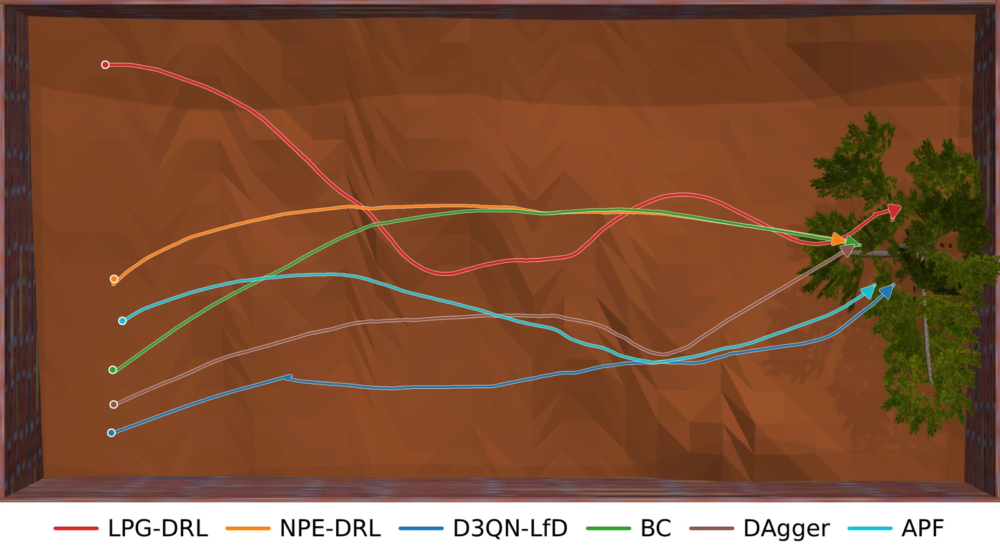
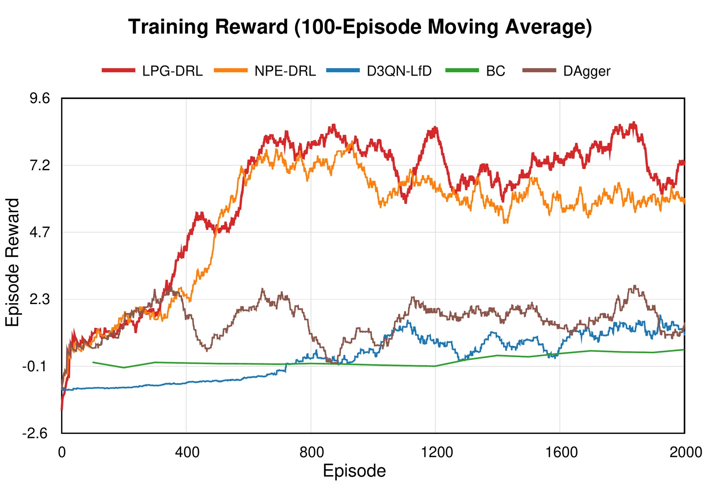
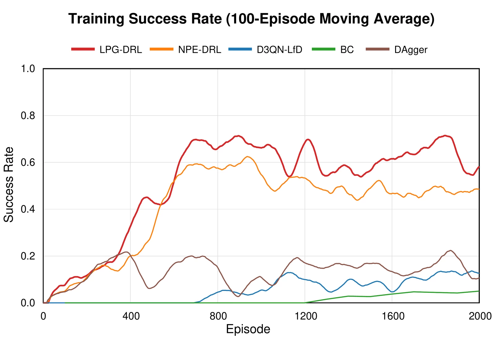

Perception-constrained guidance
A local APF teacher selects simulator-provided obstacles within an 8 m range and a ±90° field of view, then maps its guidance to discrete action labels.
Training onlyVisual navigation · Deep reinforcement learning
1 Faculty of Computing, Harbin Institute of Technology
2 Zhengzhou Advanced Research Institute, HIT3 Suzhou Research Institute, HIT
Research manuscript · 2026 ✉ Corresponding author

View figureGazebo simulation. One recorded trajectory is overlaid on a separate scene render; the two insets are independent illustrations.
Learn from a local priorGuidance constrained by range and field of view
Account for vehicle attitudeRoll and pitch feedback during training
Navigate with visionRGB frames + relative goal state at inference
The idea
Autonomous off-road navigation requires unmanned ground vehicles to avoid obstacles and traverse uneven terrain with limited onboard perception. However, existing global navigation methods assume access to global obstacle positions. Such information is difficult to obtain in practice. Many existing methods also neglect terrain-induced vehicle attitude disturbances. In this paper, we propose a local-prior-guided deep reinforcement learning (LPG-DRL) framework for attitude-aware off-road navigation.
We introduce a local artificial potential field (APF) to generate non-expert action labels from simulator-provided obstacle positions during training. It restricts obstacle selection to a prescribed sensing range and field of view. A dueling double deep Q-network learns a navigation policy through joint imitation and reinforcement learning. During inference, the network takes only stacked monocular images and relative goal states as inputs. The reward combines goal progress and collision avoidance with roll and pitch penalties. Gazebo simulation results show that LPG-DRL outperforms the evaluated baselines in navigation success rate. Ablation studies further demonstrate the effectiveness of local prior guidance and attitude-aware rewards. Local prior guidance and attitude-aware rewards improve navigation success rate in the evaluated off-road simulations.
From guidance to policy
A local teacher guides exploration. Reward feedback shapes the navigation policy.

A local APF teacher selects simulator-provided obstacles within an 8 m range and a ±90° field of view, then maps its guidance to discrete action labels.
Training onlyGoal progress and collision avoidance are combined with roll and pitch penalties. Joint imitation and temporal-difference losses train the policy.
Training onlyFour stacked RGB frames and the relative goal state feed a dual-head dueling double DQN, which selects linear and angular velocity commands.
Training & inferenceRange and field-of-view filtering restrict the teacher’s geometry. Occlusion is not explicitly modeled.

Attitude penalties discourage body inclination during training. Arrival, collision, and boundary-exit rewards replace the step reward.

Monocular images + relative goal state → motion commands.
The policy does not require the APF teacher, obstacle geometry, or attitude measurements.
In simulation
Evaluating obstacle avoidance and uneven terrain across three Gazebo scenarios.

View figure52.4%
Highest among the
evaluated methods
Success rate vs. NPE-DRL
| Method | SR (%) ↑ | CR (%) ↓ | TR (%) ↓ | OBR (%) ↓ | SC ↓ | TL (m) ↓ | EC (J) ↓ | PS (rad) ↓ | ET (s) ↓ |
|---|---|---|---|---|---|---|---|---|---|
| APF | 19.40 | 78.60 | 0.40 | 1.60 | 61.20 | 26.3606 | 0.9348 | 0.3513 | 14.7659 |
| D3QN-LfD | 19.40 | 29.40 | 38.20 | 13.00 | 70.91 | 27.8709 | 0.8963 | 0.3646 | 18.0262 |
| BC | 9.20 | 77.80 | 0.20 | 12.80 | 58.91 | 26.0413 | 0.9030 | 0.3641 | 14.6919 |
| DAgger | 14.00 | 79.00 | 0.40 | 6.60 | 58.10 | 25.8248 | 0.8300 | 0.3588 | 14.5228 |
| NPE-DRL | 38.60 | 56.80 | 0.80 | 3.80 | 63.32 | 26.8347 | 0.8281 | 0.3634 | 15.8278 |
| LPG-DRL Ours | 52.40 | 47.00 | 0.00 | 0.60 | 58.36 | 25.7065 | 0.8488 | 0.3579 | 14.6125 |
Values reproduced from the current manuscript. Scroll horizontally on smaller screens to see all nine metrics.

View figure73.0%
Highest among the
evaluated methods
Success rate vs. NPE-DRL
| Method | SR (%) ↑ | CR (%) ↓ | TR (%) ↓ | OBR (%) ↓ | SC ↓ | TL (m) ↓ | EC (J) ↓ | PS (rad) ↓ | ET (s) ↓ |
|---|---|---|---|---|---|---|---|---|---|
| APF | 19.00 | 81.00 | 0.00 | 0.00 | 57.89 | 25.8904 | 0.9295 | 0.0000 | 13.7464 |
| D3QN-LfD | 24.60 | 43.80 | 20.00 | 11.60 | 60.95 | 26.5943 | 0.8839 | 0.0000 | 15.6212 |
| BC | 22.00 | 74.00 | 0.00 | 4.00 | 55.50 | 25.7637 | 0.8764 | 0.0000 | 13.6921 |
| DAgger | 25.00 | 75.00 | 0.00 | 0.00 | 55.36 | 25.7068 | 0.8636 | 0.0000 | 13.6707 |
| NPE-DRL | 57.00 | 36.00 | 0.00 | 7.00 | 60.19 | 27.6234 | 0.8925 | 0.0000 | 14.8165 |
| LPG-DRL Ours | 73.00 | 26.00 | 0.00 | 1.00 | 56.68 | 26.3025 | 0.8016 | 0.0000 | 13.9733 |
Values reproduced from the current manuscript. Scroll horizontally on smaller screens to see all nine metrics.

View figure98.8%
Highest among the
evaluated methods
Success rate vs. NPE-DRL
| Method | SR (%) ↑ | CR (%) ↓ | TR (%) ↓ | OBR (%) ↓ | SC ↓ | TL (m) ↓ | EC (J) ↓ | PS (rad) ↓ | ET (s) ↓ |
|---|---|---|---|---|---|---|---|---|---|
| APF | 88.80 | 4.80 | 1.60 | 4.80 | 65.96 | 26.8413 | 0.9420 | 0.3346 | 15.6476 |
| D3QN-LfD | 32.40 | 1.00 | 44.80 | 21.80 | 76.54 | 28.1844 | 0.9289 | 0.3559 | 19.2327 |
| BC | 42.80 | 6.80 | 1.40 | 49.00 | 57.89 | 25.6546 | 0.8620 | 0.3268 | 14.2863 |
| DAgger | 81.60 | 2.60 | 0.80 | 15.00 | 59.30 | 26.0846 | 0.8618 | 0.3374 | 14.5954 |
| NPE-DRL | 87.60 | 0.20 | 1.00 | 11.20 | 60.85 | 26.1600 | 0.8381 | 0.3357 | 15.0446 |
| LPG-DRL Ours | 98.80 | 0.00 | 0.00 | 1.20 | 59.06 | 25.8044 | 0.8780 | 0.3647 | 14.5204 |
Values reproduced from the current manuscript. Scroll horizontally on smaller screens to see all nine metrics.
Rates are reported over validation episodes. Trajectory-related metrics are averaged over successful episodes. Representative trajectories illustrate individual runs; aggregate results are reported in the tables. Best values in each column are bold.
A closer look
How the policy learns, and what each component contributes.


Original manuscript curves · 100-episode moving averages · Off-road scenario
Replacing the local teacher with a global APF teacher lowers success from 52.4% to 31.0%. Removing the attitude reward or Dropout also reduces task completion.
The full model achieves the highest success rate among these variants in the evaluated off-road scenario.
| Method | SR (%) ↑ | CR (%) ↓ | TR (%) ↓ | OBR (%) ↓ | SC ↓ | TL (m) ↓ | EC (J) ↓ | PS (rad) ↓ | ET (s) ↓ |
|---|---|---|---|---|---|---|---|---|---|
| w/o Dropout | 18.00 | 81.00 | 0.00 | 1.00 | 64.00 | 26.6222 | 0.8092 | 0.3625 | 16.1134 |
| Global APF teacher | 31.00 | 65.00 | 0.00 | 4.00 | 62.84 | 26.5373 | 0.8560 | 0.3727 | 15.8028 |
| w/o posture reward | 19.00 | 76.00 | 2.00 | 3.00 | 62.11 | 26.1672 | 0.8261 | 0.3603 | 15.6027 |
| LPG-DRL Ours | 52.40 | 47.00 | 0.00 | 0.60 | 58.36 | 25.7065 | 0.8488 | 0.3579 | 14.6125 |
Values reproduced from the current manuscript. Scroll horizontally on smaller screens to see all nine metrics.
Reference this work
Provisional citation for the research manuscript.
@unpublished{quan2026lpgdrl,
title = {{LPG-DRL}: Local-Prior-Guided Deep Reinforcement
Learning for Attitude-Aware Off-Road Unmanned
Ground Vehicle Navigation},
author = {Quan, Wenke and Li, Wenrui and Li, Linmao and
Yang, Zhe and Wang, Xingtao and Fan, Xiaopeng},
year = {2026},
note = {Manuscript in preparation}
}Publication details and public resource links will be added when available.